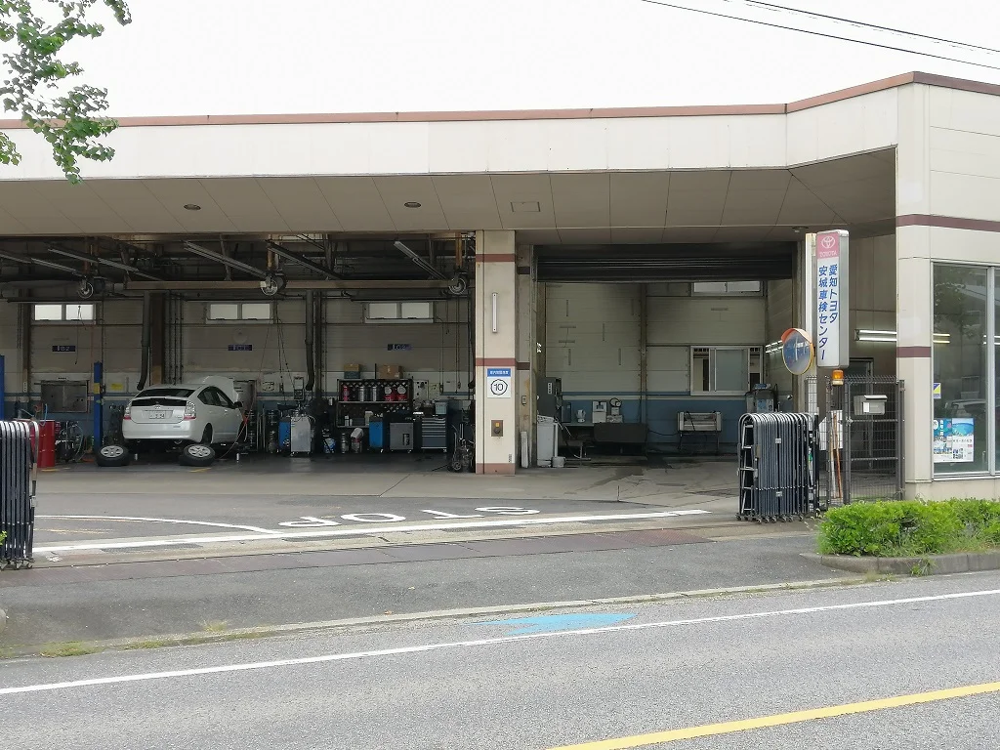
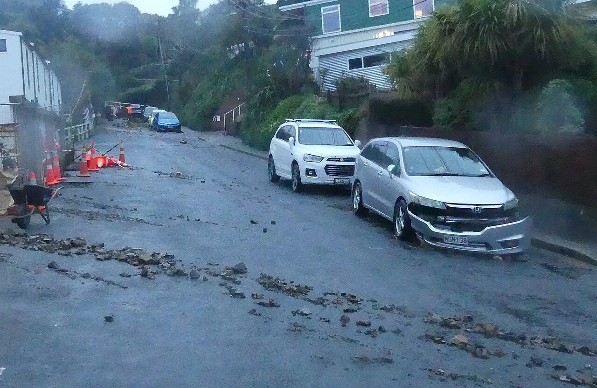
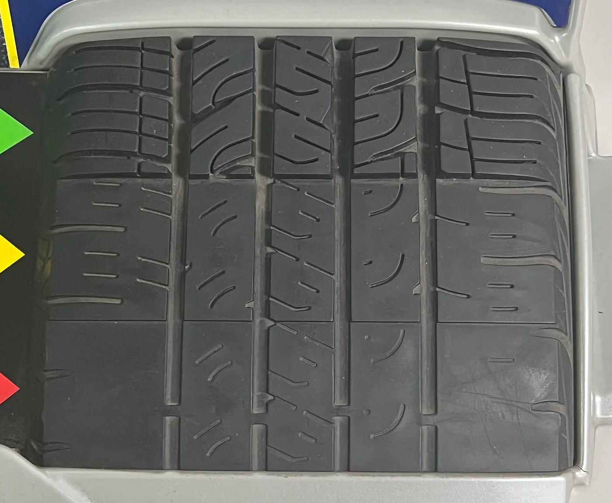
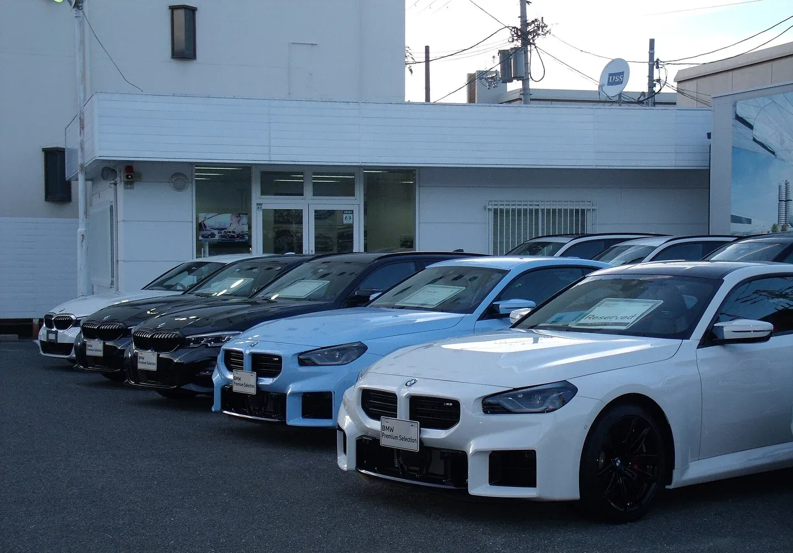
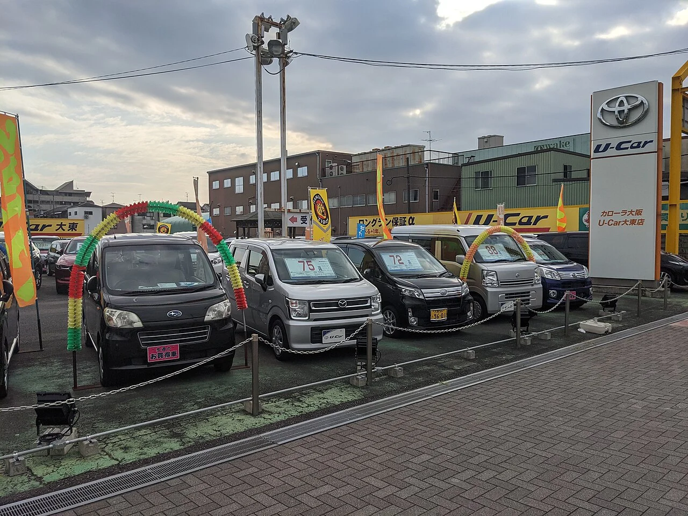

▲ 계기판 사진 속 주행거리는 비대면 구매 확인의 출발점이다 — 시트·핸들 사용감, 점검기록부와 함께 대조해야 한다
"사진은 멀쩡한데, 막상 받아 보니 달랐다." 중고차를 온라인으로만 보고 계약하는 비대면 거래가 늘면서 이런 후기가 끊이지 않는다. 모터그래프코리아는 10월 5일 보도에서 리본카가 내놓은 '비대면 구매 안심 가이드'를 소개했다. 계기판·시트·핸들 사진을 어떻게 읽을지, 성능·상태점검기록부는 무엇을 담고 있는지, 환불 조건은 어디서 갈리는지가 핵심이다. 이 글은 그 가이드를 출발점으로 삼아, 화면 너머로 차를 사기 전에 계약 단계별로 확인할 것만 따로 묶었다.
1. 사진이 알려주는 것, 끝내 알려주지 못하는 것
비대면 구매에서 사진은 '확인 자료'이지 '보증 자료'가 아니다. 모터그래프에 따르면 리본카는 계기판 사진으로 주행거리를 확인하고, 운전석 시트와 핸들처럼 사용감이 드러나는 부위까지 사진으로 살펴보라고 권한다. 주행거리에 비해 시트 측면 가죽이 심하게 닳았거나 핸들이 번들거린다면, 계기판 숫자와 실제 사용 정도가 어긋났을 가능성을 의심해 볼 단서가 된다.
▲ 계기판 사진의 주행거리는 출발점일 뿐이다(프랑스 푸조 407, 222,222km 표시 예시 — 우리 차량과 같은 km 표기) — 같은 거리라도 시트·핸들 마모가 어긋난다면 이유를 물어봐야 한다 ⓒ Wikimedia Commons / Sebleouf (CC BY-SA 4.0)
반대로 사진으로는 도저히 알 수 없는 영역이 분명하다. 같은 보도에서 짚은 대로 시동 걸 때의 소리와 진동, 편의장치가 제대로 작동하는지는 영상이나 실시간 상담을 통해 따로 확인해야 한다. 아래는 사진 한 장으로 판단할 수 있는 범위를 가늠해 본 표다. 표의 내용은 보도에서 언급된 항목에 일반적인 중고차 점검 상식을 더해 구성했다.
| 확인 수단 | 알 수 있는 것 | 알 수 없는 것 |
|---|---|---|
| 정지 사진 | 계기판 주행거리, 시트·핸들 사용감, 외관 색 차이·단차, 타이어 외형 | 시동음·진동, 변속 충격, 에어컨·편의장치 작동, 냄새 |
| 영상·실시간 상담 | 시동 소리, 계기판 경고등, 버튼·화면 작동, 엔진룸 누유 흔적 | 주행 중 소음·승차감, 하부 부식 전체, 과거 수리 이력 |
| 성능·상태점검기록부 | 사고 이력, 주요 부품 교체·수리 이력, 주행거리, 골격 판금·용접 여부 | 점검 이후 상태 변화, 기록부에 항목이 없는 소모품 상태 전부 |
| 이력 조회(카히스토리 등) | 보험 처리된 사고, 침수·전손 이력 | 자비로 고친 사고, 보험 미처리 침수 |
✅ 판매자에게 요청할 사진 6컷 (일반적인 확인 요령)
· 시동 ON 상태의 계기판 전체: 주행거리와 경고등 점등 여부를 한 컷에 (모터그래프 보도 기준 주행거리 대조의 핵심)
· 운전석 시트 측면·핸들 하단: 사용감이 몰리는 곳이라 주행거리와 어긋남을 가늠하는 단서
· 페달 고무 커버: 마모가 심하면 표시 주행거리를 다시 확인
· 외관 4면 + 지붕: 빛 반사 각도를 바꿔 도장 색 차이·단차 확인
· 휠·타이어 4개: 휠 흠집과 타이어 마모 편차
· 번호판이 보이는 전체 컷: 이후 이력 조회(3번)에 쓸 차량번호와 사진 속 차량이 같은지 대조
2. 성능·상태점검기록부 — 사진보다 먼저 받아야 하는 서류
모터그래프 보도에 따르면 판매자는 계약을 맺기 전에 사고 이력, 주요 부품 교체 및 수리 이력, 주행거리 등이 담긴 성능상태점검기록부를 소비자에게 제공할 의무가 있다. 비대면 거래라고 해서 이 의무가 달라지지 않는다. 사진을 보고 마음이 기울었다면 계약금을 보내기 전에 기록부 원본(또는 스캔본)부터 달라고 요청하는 것이 순서다.
기록부를 받으면 점검일자부터 본다. 카프리즘이 앞서 다룬 점검기록부 가이드에 따르면 기록부는 점검일로부터 120일 이내 발급분만 유효하다. 기록부가 오래됐다면 그사이 차 상태가 달라졌을 수 있다. 또 하나 흔한 오해가 있다. 기록부에서 '사고'로 표기되는 기준은 주요 골격 부위의 판금·용접·교환이고, 후드·펜더·도어 같은 외판을 교환한 경우는 '단순수리'로 적힌다. '사고 없음'이 곧 '손댄 곳 없음'은 아니라는 뜻이다.

▲ 점검은 정비 시설에서 이뤄지는 만큼 기록부가 '언제, 어디서 한 점검인지'를 먼저 봐야 한다 — 일본 아이치현의 차량 검사(車検) 정비 공장(국내 성능점검장 사진 아님) ⓒ Wikimedia Commons / HQA02330 (CC BY-SA 4.0)
📍 허위 기재라면 — 성능점검 책임보험
기록부 내용과 실제 상태가 달라 손해가 생겼을 때는 성능점검 책임보험으로 보상받는 길이 있다. 현행 보장 기간은 차량 인도일로부터 30일 또는 2,000km 중 먼저 도래하는 시점까지다(카프리즘 점검기록부 가이드 기준). 문제를 발견하면 이 기간 안에 곧바로 클레임을 걸어야 하므로, 인수 직후 하루라도 빨리 정비소에서 점검해 두는 편이 안전하다. 이 기간은 제도 개편 논의로 바뀔 수 있다(아래 6번 항목).
3. 보험이력·침수 조회 — 계약 전에 번호판으로 대조한다
사진 속 번호판이나 판매자가 알려준 차량번호만 있으면, 계약 전에 무료로 대조해 볼 수 있는 공적 조회 경로가 있다. 카프리즘이 앞서 다룬 침수차 가이드에 따르면 2026년 기준 무료로 침수 이력을 볼 수 있는 곳은 보험개발원 카히스토리와 자동차365 두 곳이다. 카히스토리는 보험 처리된 사고·침수 기록에 강하고, 자동차365는 정비·점검 같은 행정 이력까지 폭넓게 본다.
| 서비스 | 운영 | 주로 확인하는 것 | 한계 |
|---|---|---|---|
| 카히스토리 | 보험개발원 | 보험 처리된 사고 이력, 침수·전손 이력(침수 조회는 차량번호만으로 무료) | 자비 수리·보험 미처리 건은 안 나옴. 사고이력 상세 조회는 유료(소액, 요금은 계약 전 공식 사이트에서 확인) |
| 자동차365 | 한국교통안전공단(국토교통부 자동차 포털) | 정비·점검 이력, 매매용 등록 차량의 침수 정보, 압류·저당 등 등록 정보 | 애초에 신고·접수되지 않은 건은 확인 불가. 일부 상세 열람은 본인 인증이 필요할 수 있음 |
카히스토리는 공식 사이트에서 차량번호로 조회할 수 있다. 카히스토리 바로가기 자동차365에서도 정비·침수 관련 이력을 확인할 수 있다. 자동차365 바로가기

▲ 침수·수해를 겪은 차는 시간이 지나면 겉으로 티가 나지 않는다 — 번호판으로 이력을 먼저 대조하자(뉴질랜드 웰링턴 수해 현장 사례) ⓒ Wikimedia Commons / Alan Tennyson (CC BY-SA 4.0)
두 조회 모두 '기록이 남은 일'만 보여준다는 점을 잊지 말아야 한다. 조회 결과가 깨끗하다는 것은 "신고된 문제가 없다"는 뜻이지 "문제가 없다"는 뜻이 아니다. 침수가 의심되는 매물이라면 영상 상담 때 하부·시트 레일·트렁크 바닥 카펫 아래의 녹과 흙 자국, 곰팡이 냄새를 따로 확인해 달라고 요청한다. 조회 화면은 캡처해 보관해 두면, 나중에 판매자가 침수·사고 사실을 숨겼는지를 다툴 때 증거로 쓸 수 있다.
4. 영상·실시간 상담에서 꼭 시켜볼 것
사진이 알려주지 못하는 '소리·진동·작동'은 영상 상담에서 직접 시켜보는 수밖에 없다. 모터그래프 보도도 영상이나 실시간 상담으로 차량 상태를 추가로 살펴보라고 권한다. 판매자가 영상통화를 꺼리거나 "지금은 차가 매장에 없다"고 돌려 말한다면, 그 자체가 중요한 신호다.
✅ 영상 상담에서 요청할 7가지
· 냉간 시동: 시동을 끈 지 오래된 상태에서 걸어 달라고 요청(시동음·진동·경고등 확인)
· 계기판 전체: 시동 직후 경고등이 모두 꺼지는지, 주행거리가 사진과 같은지
· 엔진룸 클로즈업: 오일·냉각수 누유 흔적, 배터리 단자 부식 확인
· 타이어 트레드: 마모 상태와 제조 시기, 좌우 마모 편차
· 하부·휠하우스: 부식, 용접 자국, 흙탕물 마른 흔적(침수 의심)
· 편의장치 작동: 에어컨·히터, 창문, 센터 디스플레이, 후방 카메라
· 실내 냄새 설명: 곰팡이·담배 냄새 여부(영상으로는 안 보이므로 판매자 설명을 서면으로 남기기)

▲ 타이어 트레드는 사진·영상으로 확인할 수 있는 대표적인 소모품 항목이다 — 마모 한계에 가까운지 직접 요청해 보자 ⓒ Wikimedia Commons / TaurusEmerald (CC BY-SA 4.0)
5. 환불·보증 — "마음에 안 들면 돌려줄 수 있나"를 계약 전에 못 박는다
모터그래프 보도가 가장 강조한 대목은 환불 신청 기간과 주행거리 기준 등 세부 조건이 업체마다 다르다는 점이다. 비대면 구매는 실물을 못 보고 계약하는 만큼, 받아 본 뒤 마음에 들지 않을 때의 퇴로가 사실상 보증이다. 아래는 확인된 정책을 비교한 것이다. 정책은 바뀔 수 있으므로 계약 전 최신 약관을 반드시 확인해야 한다.
| 업체·유형 | 환불·보증 조건 | 비고 |
|---|---|---|
| 리본카(직영) | 구매 후 8일 이내, 주행거리 800km 이하일 때 환불(모터그래프) | TÜV SÜD 인증 직영 정비센터(RTC)에서 자체 점검 기준 RQI로 점검한 뒤 판매 |
| 케이카(직영) | 구매 후 3일 이내 100% 환불, 3일간 주행거리 제한 없음, 이전비 등 부대비용·케이카 워런티 가입금액도 환불(2021년 도입 보도) | 당시 기준 10년·16만km 이상 차량은 대상 제외. 현행 약관은 케이카 공식 사이트에서 확인하지 못해 계약 시 재확인 필요 |
| 현대 인증중고차 | 구매 시점 기준 1년·2만km까지 무상 보증(신차 보증 기간 포함, 보도 기준) | 유료 추가 상품 '워런티 플러스'(2026.4.17 출시): 3개월·5,000km ~ 12개월·2만km, 자기부담금 없이 순정 부품 수리 |
| 일반 매매상사·중개 플랫폼 매물 | 업체·판매자별로 상이 | 환불 규정이 없다면 계약서 특약으로 명시 요구 |

▲ 제조사 인증 중고차는 점검·보증 체계가 갖춰진 대신 가격이 높은 편이다 — 일본 오사카 BMW 공식 인증 중고차 전시장 ⓒ Wikimedia Commons / Mr.ちゅらさん (CC BY 4.0)
| 확인 항목 | 왜 중요한가 |
|---|---|
| 환불 신청 기한(일·시각) | '인도일 포함'인지 '인도 다음 날부터'인지에 따라 하루가 갈린다 |
| 주행거리 한도 | 리본카 800km처럼 한도를 넘기면 환불이 막힌다. 탁송 거리도 포함되는지 확인 |
| 제외 차종·상태 | 케이카처럼 고연식·고주행 차량은 환불 대상에서 빠질 수 있다 |
| 환불 금액 범위 | 차량 대금뿐 아니라 이전비·탁송비·보증상품 가입금까지 돌려받는지 |
| 보증 제외 항목 | 소모품, 사후 장착 옵션, 침수·사고 이후 손상이 빠지는 경우가 많다 |
인증중고차와 직영 중고차, 일반 매매상사 매물을 견줄 때 가격만 봐서는 안 된다. 같은 차종이라도 '환불 가능 기간'과 '보증 범위'가 가격에 이미 반영돼 있기 때문이다. 현대 인증중고차는 구매 시점 기준 1년·2만km까지 무상 보증을 제공하고, 여기에 워런티 플러스(출시 보도 기준 소형·준중형 3개월 38만 5천 원~12개월 77만 원, 대형·SUV 49만 5천~88만 원 수준)를 더할 수 있다. 다만 보증 범위는 일반·냉난방·동력전달·엔진 주요 부품으로 정해져 있어 소모품은 별개로 봐야 한다(세부 약관은 공식 안내 확인). 가격이 크게 싼 매물일수록 환불·보증이 비어 있는지부터 의심해 볼 일이다.
6. 제도도 움직인다 — 국토부 개편안과 소비자가 알아둘 점
국토교통부는 8월 6일 국가정책조정회의를 거쳐 중고차 소비자 보호대책을 발표했다. 스타뉴스 보도(7일자 발표로 소개)에 따르면 도입 이후 5년 만에 성능보험료가 2.2배 뛰었고, 보험료 가운데 사업비 비중이 44%에 달해 일반 자동차보험(16%)의 2.75배였다. 소비자 불만의 약 80%는 점검기록부 부실·불충분한 보상에 집중됐다는 것이 국토부 설명이다.
| 항목 | 현재 | 개편안 |
|---|---|---|
| 책임 주체 | 성능점검자 성능보험(보험료는 소비자 부담) | 성능보험을 '매매업자 의무보험'으로 통합, 매매업자가 하자 보증 책임을 우선 부담 |
| 계약 해제 | 법정 환불 기준 없음 | 구매 후 7일 이내 엔진 등 주요 장치에 중대 하자가 나오고 수리비·수리 기간이 과도한 경우 계약 해제(보도에 따라 수리비 매매가 30% 이상·300만 원 이상, 수리 30일 초과 등으로 소개 — 세부 기준은 확정 전) |
| 보장 기간 | 인도 후 30일 또는 2,000km | 보장 기간·항목을 늘리되 제조사 보증 항목은 제외해 보험료 부담을 낮춘다는 방향(구체 기간·km는 미정, TF 논의) |
| 광고 표시 | 수수료 등 별도 표기 사례 | 수수료를 포함한 총비용 표시 의무화 |
이 대책은 발표 단계다. 국토부는 9월 중 법률 개정안 발의를 목표로 했지만, 10월 6일 현재 실제 국회 발의가 이뤄졌는지는 이번 조사에서 확인하지 못했다. 하위법령 정비까지 감안하면 실제 시행은 내년 하반기가 될 전망이다(총비용 표시제만 하위법령 개정으로 빠르게 시행 가능). 계약 해제 대상은 10년·20만km 이하 차량으로 소개됐고, 수리 기간 30일 초과는 부품 수급이 막히면 최대 10일 연장될 수 있다는 내용이 보도됐다. 정부는 매매업자·성능점검자의 하자 발생률과 보상 실적도 매년 공개해 우수 사업자를 지정한다는 계획이다. 그러니 지금 계약하는 비대면 거래에는 개편 이전의 규칙(30일·2,000km 보장, 법정 환불 없음)이 적용된다고 보고 움직이는 편이 안전하다. 달라질 규칙을 믿고 확인을 건너뛰어서는 안 된다.
7. 계약 직전 최종 점검 — 순서대로 체크하자
▲ 전시장에 늘어선 매물은 같은 차종이라도 상태 편차가 크다 — 사진만이 아니라 서류·이력·환불 조건을 한꺼번에 따져야 한다 ⓒ Wikimedia Commons / Mr.ちゅらさん (CC BY-SA 4.0)

▲ 같은 가격대의 비슷한 매물이 줄지어 있어도 점검 이력과 환불 조건은 제각각이다 — 일본 도요타 U-Car 매장(국내 매장 사진 아님) ⓒ Wikimedia Commons / Mr.ちゅらさん (CC BY-SA 4.0)
✅ 비대면 중고차 계약 전 체크리스트
① 성능상태점검기록부 요청 → 점검일 120일 이내인지, 사고·교체·수리 이력 확인
② 차량번호로 카히스토리·자동차365 조회 → 결과 화면 캡처 보관
③ 기록부 vs 사진 대조 → 주행거리, 외판 교환 부위, 시트·핸들 사용감
④ 영상 상담으로 냉간 시동·경고등·엔진룸·타이어·편의장치 확인
⑤ 환불 신청 기한, 주행거리 한도, 제외 차종 조건을 계약서에서 확인
⑥ 보증(기간·km·제외 항목)과 책임보험 청구 절차 확인
⑦ 계약금 입금은 서류·환불 조건 확인 후 — 업체 명의 계좌인지 확인
⑧ 인수 직후 정비소 점검 → 30일·2,000km 안에 이상이 나오면 즉시 클레임
8. 요약
사진은 계기판·시트·핸들·외관을 읽는 확인 자료일 뿐, 시동음·진동·편의장치 작동처럼 가장 중요한 부분은 영상 상담과 서류로 따로 확인해야 한다. 판매자는 계약 전에 성능상태점검기록부를 제공해야 하고, 카히스토리·자동차365 조회로 침수·보험 처리 사고를 대조할 수 있다. 다만 두 조회 모두 신고·보험 처리되지 않은 건은 걸러내지 못한다.
비대면 구매의 진짜 안전장치는 환불·보증 조건이다. 리본카는 8일·800km 이하, 케이카는 3일 환불(2021년 도입 당시 기준)처럼 업체마다 조건이 다르므로 계약서에서 직접 확인해야 한다. 국토부의 7일 계약 해제·보장 확대 대책은 아직 시행 전이어서, 지금 거래는 현행 규칙(30일·2,000km)을 전제로 움직이는 편이 안전하다.